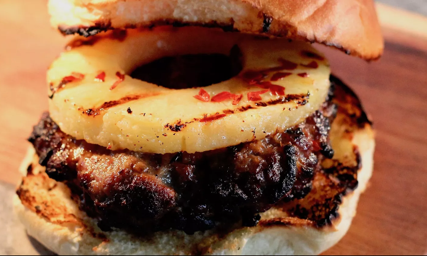

Teriyaki Onion Burgers

Description
A very tasty burger made from a mixture of ground beef and teriyaki marinade
Ingredients
- 1 pound ground beef
- 1/4 cup teriyaki marinade sauce
- 1 (3 ounce) can French-fried onions
- 4 slices Cheddar cheese
- 4 hamburger buns, split
Steps
- Preheat a grill for high heat
- In a medium bowl, mix together the ground beef, teriyaki marinade and
French-fried onions.
- Form the mixture into 4 patties.
- Lightly oil the grilling surface, and place patties on the preheated grill.
- Grill for 4 to 5 minutes per side, or until well done.
- Top with cheese, and serve on hamburger buns.